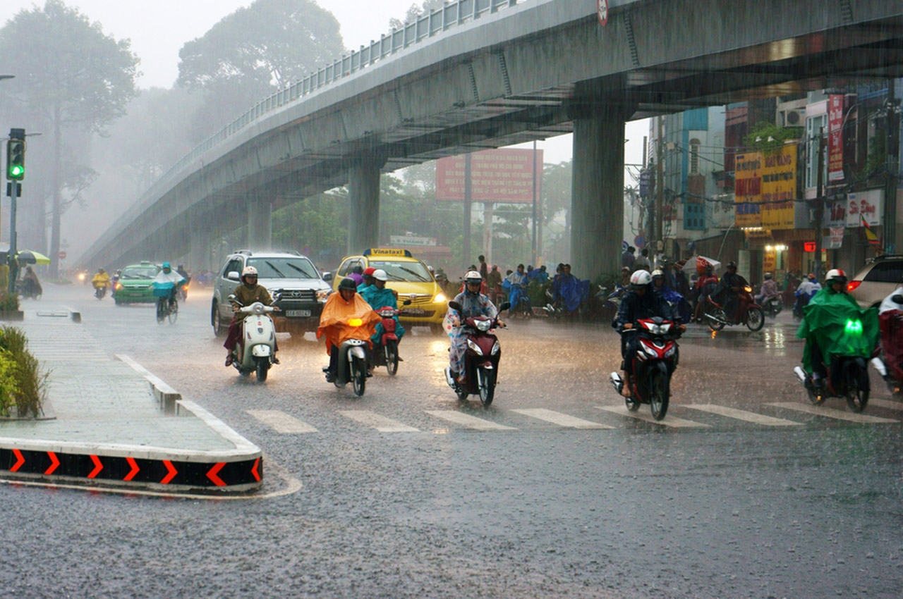

ĐIỂM ĐẶC BIỆT CỦA KHÍ HẬU MIỀN NAM
-

THỜI TIẾT Ở THÀNH PHỐ HỒ CHÍ MINH
Ở thành phố Hồ Chí Minh, lượng mưa trung bình hằng năm khoảng 1,900mm và thành phố này rất dễ bị ngâp úng. Nhiệt độ dao động từ 30°C vào khoảng thời gian từ tháng Mười Một đến tháng Một và lên đến 35°C vào khoảng thời gian từ tháng Ba đến tháng Năm.
Tóm lại, ở miền Nam Việt Nam thì khoảng thời gian dễ chịu nhất là từ tháng Mười Hai đến giữa tháng Một. Tháng Ba và tháng Bốn tuy không quá nóng đến mức khó chịu nhưng trời vẫn hanh khô. Trong khoảng thời gian này mà được thả bộ đi dọc trên bờ biển hoặc một hòn đảo nào đó, như Phú Quốc chẳng hạn, thì gió biển sẽ làm mọi thứ dễ chịu hơn nhiều.
-
CHÚ Ý CÁC CƠN BÃO
Áp thấp nhiệt đới từ phía Tây Thái Bình Dương, gọi chung là Bão, di chuyển từ phía Đông vào, ảnh hưởng trực tiếp đến thời tiết Việt Nam từ giữa tháng Năm đến giữa tháng Mười Hai. Ở Việt Nam, những cơn bão này có khuynh hướng mạnh lên ở mức cao nhất bởi chúng đã hình thành trực tiếp từ biển rồi mới tiến vào đất liền.
Vùng chịu ảnh hưởng từ những cơn bão nhiều nhất là miền Bắc, đăc biệt trong suốt các tháng từ tháng Bảy đến tháng Mười. Đối với các tỉnh đồng bằng duyên hải miền Trung, thời điểm chịu ảnh hưởng của những cơn bão thường là vào tháng Chín đến tháng Mười Hai, còn các tỉnh miền Nam thì từ tháng Mười đến tháng Mười Hai.
-
HAI MÙA
Có thể bạn đã từng nghĩ rằng khí hậu phụ thuộc vào sự luân phiên của 4 mùa cổ điển, nhưng ở Việt Nam, không có mùa xuân, mùa hè, mùa thu và mùa đông gì cả. Thời tiết Việt Nam chỉ có hai mùa, đó là mùa khô và mùa mưa. Đây là hai chủ đề duy nhất có thể nói chuyện khi nhắc đến thời tiết, và có lẽ vì như vậy nên thời tiết Việt Nam cũng chưa bao giờ thật sự là một chủ đề quan trọng để nói chuyện ở đây!